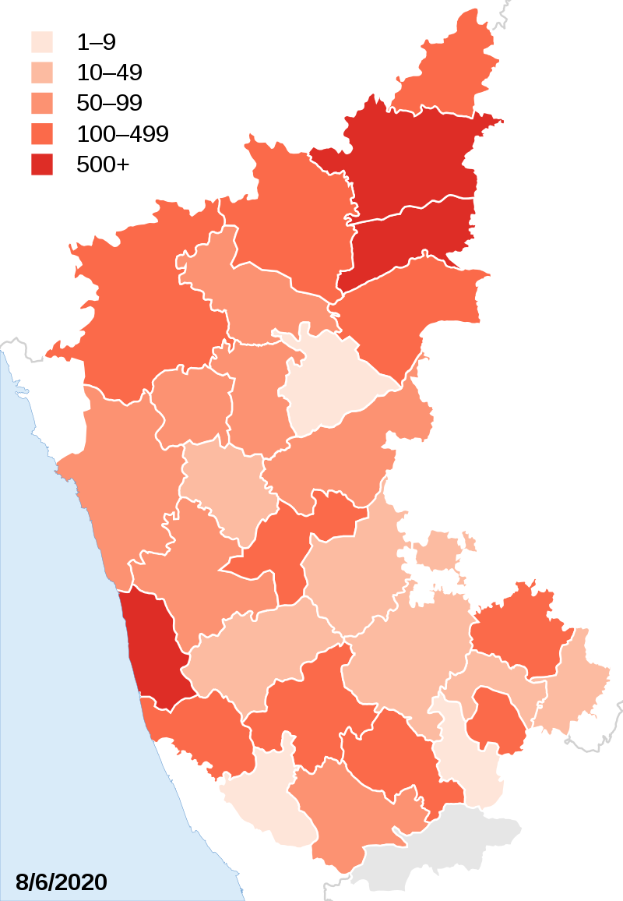

COVID-19
Statistics:COVID-19 pandemic in Karnataka
As per statistics of 09-06-2020

- Confirmed cases:5921
- Active cases:3170
- Recovered:2683
- Deaths:66
- Fatality rate:1.11%
- Index case:Bengaluru Urban
| District |
Active cases |
Recovered |
Death |
Total cases |
| Udupi |
628 |
318 |
1 |
947 |
| Kalaburagi |
548 |
213 |
8 |
769 |
| Yadgir |
549 |
92 |
1 |
642 |
| Bengaluru Urban |
204 |
298 |
19 |
522 |
| Raichuru |
276 |
82 |
1 |
359 |
| Mandya |
98 |
236 |
0 |
334 |
| Belagavi |
149 |
151 |
1 |
301 |
| Bidar |
141 |
132 |
6 |
279 |
| Devanagere |
48 |
157 |
6 |
211 |
| Hassan |
61 |
150 |
0 |
211 |
| Dakshina Kannada |
118 |
85 |
6 |
210 |
| Vijayapura |
67 |
131 |
6 |
204 |
| Chikkaballapura |
40 |
109 |
3 |
152 |
| Mysuru |
5 |
94 |
0 |
99 |
| Nagapattinam |
30 |
51 |
0 |
81 |
| Uttara Kannada |
24 |
72 |
0 |
96 |
| Bagalkote |
11 |
82 |
1 |
94 |
| Shivamogga |
42 |
31 |
0 |
73 |
| Ballari |
24 |
43 |
1 |
68 |
| Dharwad |
27 |
39 |
0 |
66 |
| Gadag |
14 |
33 |
2 |
49 |
| Chitradurga |
17 |
23 |
0 |
40 |
| Bengaluru Rural |
24 |
11 |
01 |
36 |
| Other state |
6 |
27 |
1 |
34 |
| Tumakuru |
4 |
28 |
2 |
34 |
| Kolar |
12 |
18 |
0 |
30 |
| Haveri |
11 |
11 |
0 |
22 |
| Chikkamagaluru |
0 |
18 |
0 |
18 |
| Koppal |
8 |
4 |
0 |
12 |
| Ramanagara |
4 |
1 |
0 |
5 |
| Kodagu |
2 |
1 |
0 |
3 |
| Tiruvarur |
17 |
45 |
0 |
62 |
| Chamarajanagara |
1 |
0 |
0 |
1 |